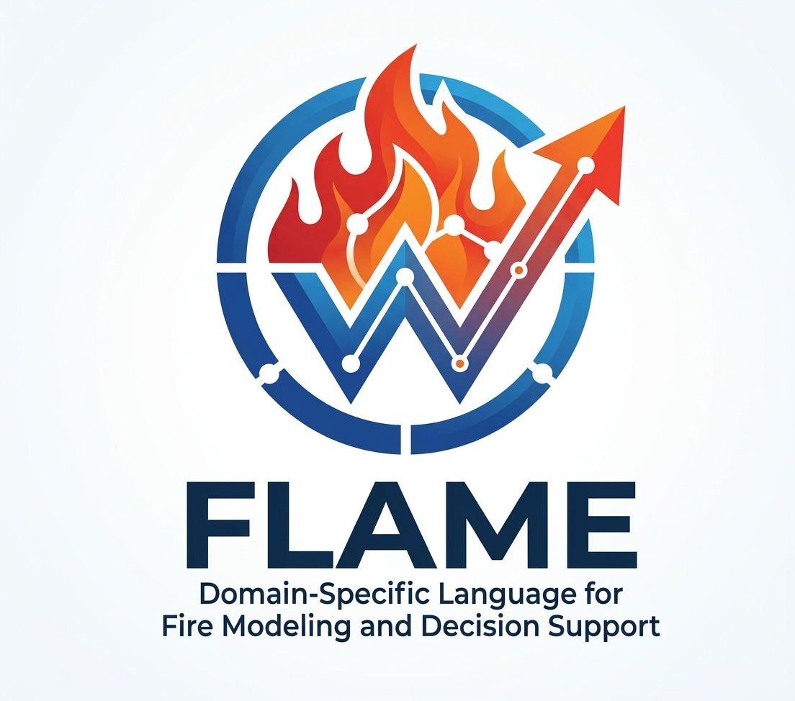

Linguagem experimental com editor Windows: variáveis, condições, ciclos, funções e leitura de CSV.
Downloads e estado das versões · Guia de utilização
let total = 0
for i in 1..5:
let total = total + i
print(total)
Os exemplos meteorológicos são didáticos. Esta versão não calcula FWI nem simula propagação de incêndios.
Licença MIT · Daniel Ricardo Maranhão Santana.